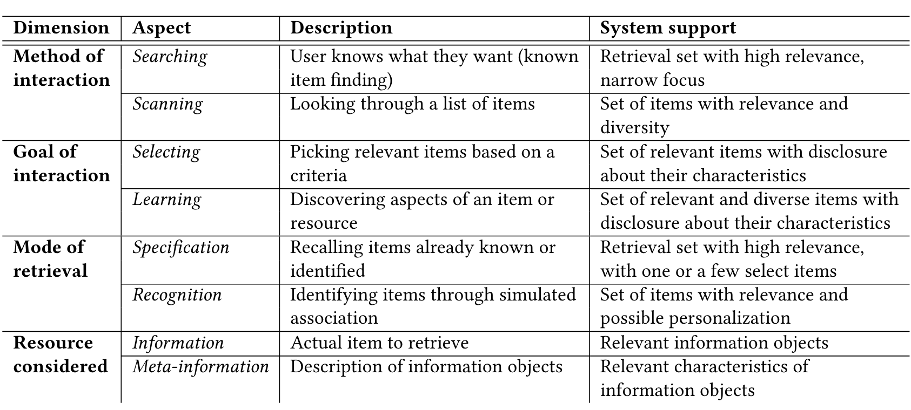

Situating Search
Abstract
Search systems, like many other applications of machine learning, have become increasingly complex and opaque. The notions of relevance, usefulness, and trustworthiness with respect to information were already overloaded and often difficult to articulate, study, or implement. Newly surfaced proposals that aim to use large language models to generate relevant information for a user’s needs pose even greater threat to transparency, provenance, and user interactions in a search system. In this perspective paper we revisit the problem of search in the larger context of information seeking and argue that removing or reducing interactions in an effort to retrieve presumably more relevant information can be detrimental to many fundamental aspects of search, including information verification, information literacy, and serendipity. In addition to providing suggestions for counteracting some of the potential problems posed by such models, we present a vision for search systems that are intelligent and effective, while also providing greater transparency and accountability.
removing or reducing interactions in an effort to retrieve presumably more relevant information can be detrimental to many fundamental aspects of search, including information verification, information literacy, and serendipity.(p. 1)
that a search system needs to support more than matching or generating an answer; that an in- formation processing system should provide more ways to interact with and make sense out of information than simply retrieving it based on programmed in notions of relevance and usefulness(p. 1)
To the extent that they sometimes get the right answer to such questions is only because they happened to synthesize relevant strings out of what was in their training data. No reasoning is involved [8, 47]. Similarly, language models are prone to making stuff up (see (5) above), because they are not designed to express some underlying set of information in natural language; they are only manipulating the form of language. (p. 2)
Thus, while the distributional in- formation absorbed by language models can make them extremely useful components of larger systems, the fact that it also enables them to generate seemingly relevant and coherent text does not make them trustworthy sources of information — even as sounding conversational makes people more likely to trust them [1, 24]. (p. 2)
we think it is particularly important for that imagining to be informed by not only what is and is not cur- rently possible technologically but also by scholarship about how technologies, especially once scaled, are affecting people. (p. 2)
In addition, we argue that just as everyone would have a different idea about how to advance society, the visions for search systems (and for that matter, any automated decision system) are often tied to one’s own beliefs and strengths. (p. 3)
exploratory search as a “sense making activity focused on the gathering and use of information to foster intellectual de- velopment.”(p. 5)
Some search tasks such as simple fact-finding require few interactions with the information systems and can be completed in short period of time with one or two queries. On the other hand, accomplishing a complex search task requires completing multiple sub-tasks in multi-round search sessions with multiple queries and interactions with multiple infor- mation objects (i.e., documents, items) [70]. Being able to identify users’ overall tasks and sub-tasks enables systems to provide people with better access to information [48]. (p. 5)
Understanding tasks and underlying intents which engage people in the process of seeking information is crucial to selecting appropriate ranking, re-ranking and query suggestions [57]. (p. 5)
As information seekers find information to fill in the gaps in their knowledge, they also learn about the task and the topic [59]. This, in turn, changes what information they seek and how. Finding information and restructuring knowledge or learning can go hand-in-hand. In other words, information search is a sense-making process [21], bridging the uncertainty (gap in knowledge) between the expected and observed situation.(p. 5)
Belkin et al.’s [5] model of information seeking behaviors posits four dimensions (Figure 2): method of interaction (searching/scanning), goal of interaction (selection/learning), mode of retrieval (specification/recognition), and resource considered (information/meta-information). (p. 6)
Nothing in that system design ensures a solid, reliable link between the synthesized text and the cited resource. (p. 6)
But perhaps more importantly for this scenario, it does not display a range of possible resources, and thus prevents the user from being able to build their own model of the space of possibilities available. (p. 6)

Second, by synthesizing results from multiple different sources and thus masking the range that is available, rather than providing a range of sources, the system cuts off the user’s ability to explore that space. (p. 8)
it is clear that people do not use search engines for only finding specific information based on preconceived notion of a need; instead, they are also using it to learn, explore, and make decisions. (p. 9)
It is far too easy to look at a page full of stereotype-confirming results and have the impression that “Every- one must think so,” if conceiving of the search results as reflecting a natural distribution of human behavior, or, worse, “That’s just how the world is,” if perceiving the search engine as an objective source of disembodied knowledge.(p. 9)
such systems should be trans- parent to their users about their limitations, about the nature of their source corpus and any other data used in training system components, about the economic forces that shape search results, about the potential for the system to reflect and amplify societal biases, and about options for redress when examples of bias per- petuation are found. (p. 9)
the system should instead first focus on better understanding those contexts and tasks through a combination of context extraction techniques, dialogue with the user, and support for interaction. (p. 10)
@inproceedings{Shah_Bender_2022, address={Regensburg Germany}, title={Situating Search}, ISBN={978-1-4503-9186-3}, url={[https://dl.acm.org/doi/10.1145/3498366.3505816](https://dl.acm.org/doi/10.1145/3498366.3505816)}, DOI={[10.1145/3498366.3505816](https://doi.org/10.1145/3498366.3505816)}, abstractNote={Search systems, like many other applications of machine learning, have become increasingly complex and opaque. The notions of relevance, usefulness, and trustworthiness with respect to information were already overloaded and often difficult to articulate, study, or implement. Newly surfaced proposals that aim to use large language models to generate relevant information for a user’s needs pose even greater threat to transparency, provenance, and user interactions in a search system. In this perspective paper we revisit the problem of search in the larger context of information seeking and argue that removing or reducing interactions in an effort to retrieve presumably more relevant information can be detrimental to many fundamental aspects of search, including information verification, information literacy, and serendipity. In addition to providing suggestions for counteracting some of the potential problems posed by such models, we present a vision for search systems that are intelligent and effective, while also providing greater transparency and accountability.}, note={4 citations (Semantic Scholar/DOI) [2022-11-16]}, booktitle={ACM SIGIR Conference on Human Information Interaction and Retrieval}, publisher={ACM}, author={Shah, Chirag and Bender, Emily M.}, year={2022}, month={Mar}, pages={221–232}, language={en} }